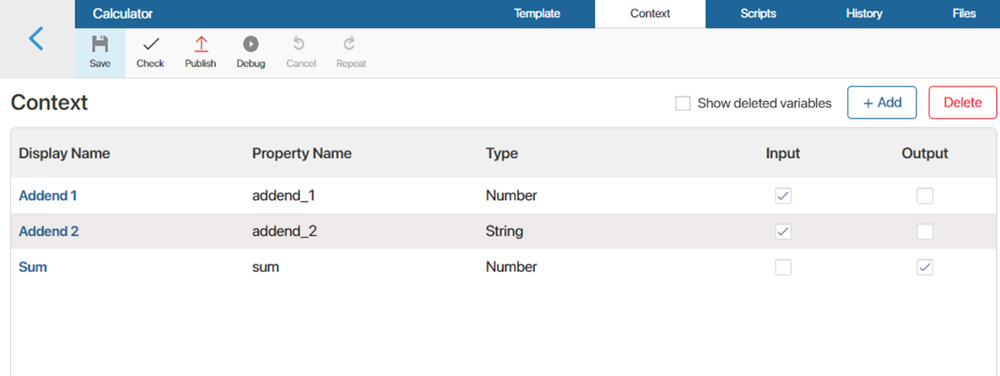
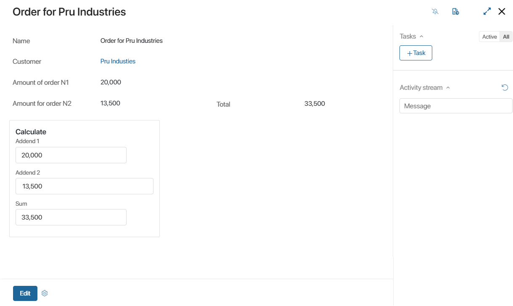

When working with widget context, you can create variables that are used to configure interfaces and write scripts. But note that the context of system and custom widgets are different. Read more about working with system widget context in Context types.
When creating a custom widget, you can specify the input and output variables, which you cannot do in system widgets. You can also edit the settings window that opens when the widget is placed on a form or page.
To work with the additional options, open the widget in the interface designer. On the top panel, go to the Context tab.
Input and output variables
When you place a widget on a form or a page, you can use the Input and Output options to:
- Manage the visibility of the widget’s variables in the context of a page or a form.
- Pass the widget’s context to the context of a page or form.
For this option to work correctly, you need to map the widget’s context variables to the properties of the form or page that it is located on.
To enable the Input and Output options, open the widget in the interface designer. On the top panel, select the Context tab. Configure the options for each variable.

- Input. This variable will record and store the value of a property from the form or page that the widget is located on.
- Output. The value of this property will be passed to the property of the form or page that it is located on.
- Both options are enabled. In this case, when the value of the widget’s variable changes, the value of the form or page property will also change, and vice versa.
- Both options are disabled. In this case, the value of the widget’s variable is not passed to the form or page context. The variable is not mapped with a field of the form or page. Its value is set up in the widget’s settings when the widget is added.
Example of configuring additional options
To see how the Input and Output options work in real life, take a look at the following example. Let’s create a widget named Calculator:
- Go to Administration > Interfaces, click +Create, select Widget, enter its name, and save the settings.
- The interface designer will open. Click +Widget and drag the Panel with header widget to the modeling canvas.
- Go to the Context tab and add properties of the Number type: Addend 1, Addend 2, and Sum.
- Set up additional options for the added properties:
- For Addend 1 and Addend 2, enable the Input option.
- For Sum, enable the Output option.
- Go back to the Template tab. On the right-side panel, switch to Properties and drag the added variables to the canvas. Place them inside the Panel with header widget.
- Now add a script that will calculate the sum of the Addend 1 and Addend 2 fields. To do that, select the Addend 1 field click on the gear icon next to its name to open the settings. Go to the Events tab and click Create in the On value change handler. Enter a name and click Create and Open. On the Scripts tab that opens, add the following:
async function calc (): Promise<void> {
debugger;
Context.data.sum = Context.data.addend_1 !== undefined && Context.data.addend_2 !== undefined ? Context.data.addend_1 + Context.data.addend_2 : undefined;
}
Do the same for Addend 2.
- Save and publish the widget. Now you can add the custom Calculator widget to pages and forms of apps.
Let’s say you have the Clients app. You can place the Calculator widget on its form. In Settings, map the widget’s variables to the app’s field named Total.
As the Input option is enabled to the Addend 1 and Addend 2 variables, the values of the mapped fields will be passed to the widget. The script will calculate the total. Since the Output option is enabled for the Sum field, its value will then be passed to the Total field.

Set up a custom widget settings window
You can create a custom settings window for each widget you create. The system administrator will use it to set the options that determine the widget’s behavior.
To set up a custom settings window, go to the Context tab. In the top right corner, click Create Form. When you confirm the action, the interface designer will open. Here you can change the layout of the settings window, create new context variables, write scripts, etc.
By default, the form comprises a pre-configured Tabs widget that includes the Standard settings form widget. You can change the settings of these objects or delete them. You can also add new widgets or fields.
When you finish making changes, click Save on the top panel of the interface designer. To go back to the custom widget creation page, click in the top left corner of the page.
When the widget is published, the new settings page will be available to users when they place the widget on the modeling canvas.
Found a typo? Select it and press Ctrl+Enter to send us feedback